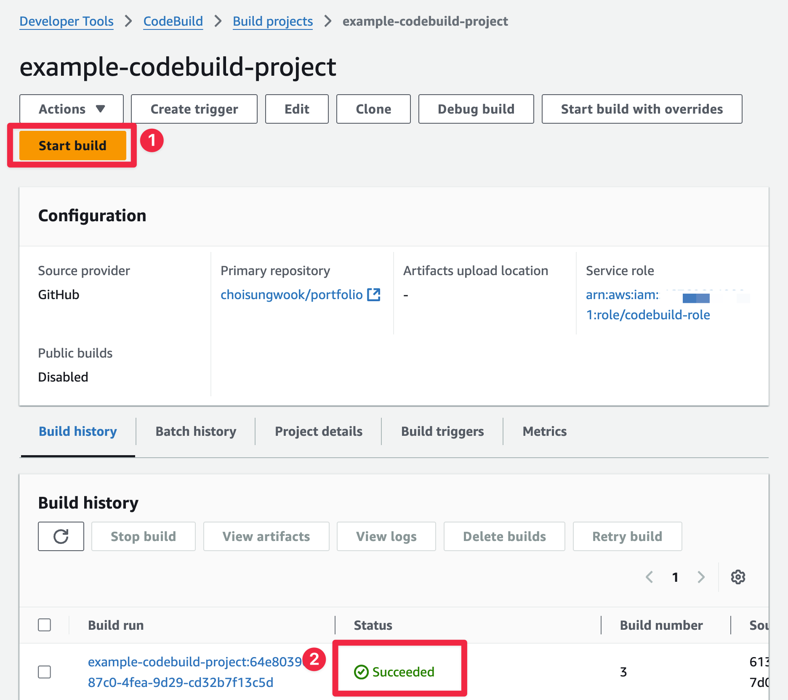

Index
개요
- packer를 codebuild로 실행
실습 예제
buildspec.yaml
version: 0.2
phases:
install:
commands:
- echo Installing Packer...
- sudo yum install -y yum-utils
- sudo yum-config-manager --add-repo https://rpm.releases.hashicorp.com/AmazonLinux/hashicorp.repo
- sudo yum -y install packer
build:
commands:
- echo Starting Packer build...
- packer init ./
- packer build al2023-nginx.pkr.hcl
artifacts:
files:
- '**/*'
al2023-nginx.pkr.hcl
packer {
required_plugins {
amazon = {
version = ">= 1.2.8"
source = "github.com/hashicorp/amazon"
}
}
}
source "amazon-ebs" "nginx" {
ami_name = "al2023-nginx-{{timestamp}}"
instance_type = "t4g.medium"
region = "ap-northeast-2"
source_ami_filter {
filters = {
name = "al2023-ami-minimal-2023.6.*"
root-device-type = "ebs"
virtualization-type = "hvm"
}
owners = ["137112412989"] # Amazon
most_recent = true
}
ssh_username = "ec2-user"
}
build {
name = "nginx-golden-image"
sources = [
"source.amazon-ebs.nginx"
]
provisioner "shell" {
inline = [
"sudo yum -y install nginx",
"sudo systemctl enable nginx",
]
}
}
테라폼으로 생성하는 codebuild
terraform {
required_providers {
aws = {
source = "hashicorp/aws"
version = "5.81.0"
}
}
required_version = ">= 1.4"
}
provider "aws" {
region = "ap-northeast-2"
}
resource "aws_codebuild_project" "example" {
name = "example-codebuild-project"
description = "Example CodeBuild project"
build_timeout = 180
environment {
compute_type = "BUILD_GENERAL1_SMALL"
image = "aws/codebuild/amazonlinux-x86_64-standard:5.0-23.05.22"
type = "LINUX_CONTAINER"
image_pull_credentials_type = "CODEBUILD"
}
service_role = aws_iam_role.codebuild_role.arn
source {
type = "GITHUB"
location = "https://github.com/choisungwook/portfolio"
git_clone_depth = 1
buildspec = "packer/3_packer_with_codebuild/codebuild/buildspec.yaml"
}
# reference: https://github.com/choisungwook/portfolio/pull/135
source_version = "613e58245f9ce62a7f50653ceb8d8207d05ee032"
artifacts {
type = "NO_ARTIFACTS"
}
tags = {
Environment = "test"
}
}
resource "aws_iam_role" "codebuild_role" {
name = "codebuild-role"
assume_role_policy = jsonencode({
Version = "2012-10-17"
Statement = [
{
Action = "sts:AssumeRole"
Effect = "Allow"
Principal = {
Service = "codebuild.amazonaws.com"
}
}
]
})
tags = {
Environment = "test"
}
}
resource "aws_iam_role_policy" "codebuild_policy" {
name = "codebuild-policy"
role = aws_iam_role.codebuild_role.id
policy = jsonencode({
Version = "2012-10-17"
Statement = [
{
Action = [
"s3:GetObject",
"s3:PutObject"
]
Effect = "Allow"
Resource = "*"
},
{
Action = [
"ec2:AttachVolume",
"ec2:AuthorizeSecurityGroupIngress",
"ec2:CopyImage",
"ec2:CreateImage",
"ec2:CreateKeypair",
"ec2:CreateSecurityGroup",
"ec2:CreateSnapshot",
"ec2:CreateTags",
"ec2:CreateVolume",
"ec2:DeleteKeyPair",
"ec2:DeleteSecurityGroup",
"ec2:DeleteSnapshot",
"ec2:DeleteVolume",
"ec2:DeregisterImage",
"ec2:DescribeImageAttribute",
"ec2:DescribeImages",
"ec2:DescribeInstances",
"ec2:DescribeInstanceStatus",
"ec2:DescribeRegions",
"ec2:DescribeSecurityGroups",
"ec2:DescribeSnapshots",
"ec2:DescribeSubnets",
"ec2:DescribeTags",
"ec2:DescribeVolumes",
"ec2:DetachVolume",
"ec2:GetPasswordData",
"ec2:ModifyImageAttribute",
"ec2:ModifyInstanceAttribute",
"ec2:ModifySnapshotAttribute",
"ec2:RegisterImage",
"ec2:RunInstances",
"ec2:StopInstances",
"ec2:TerminateInstances"
]
Effect = "Allow"
Resource = "*"
}
]
})
}
codebuild_build.sh
- codebuild github에서 다운로드 하세요
로컬 실행
- $HOME/.aws/config파일에 설정된 default 프로파일로 codebuild를 로컬로 실행합니다. 아래 예제는 ARM 맥북(aarch64)에서 실행한 예제입니다.
./codebuild_build.sh \
-i public.ecr.aws/codebuild/amazonlinux2-aarch64-standard:3.0 \
-l public.ecr.aws/codebuild/local-builds:aarch64 \
-c \
-p default \
-b buildspec-local.yaml \
-a artifacts
- ARM 맥북에서 실행하려면 packer 설정에서 인스턴스타입을 graviton으로 변경해야 합니다.
source "amazon-ebs" "nginx" {
ami_name = "al2023-nginx-{{timestamp}}"
instance_type = "t4g.medium" # <-- change
- AWS console에서 생성된 AMI를 확인합니다.

codebuild 실행
- terraform으로 codebuild를 생성합니다.
- codebuild를 실행하고 실행결과가 성공했는지 확인합니다.


- AMI가 생성되었는지 확인합니다.
참고자료
- https://github.com/aws/aws-codebuild-docker-images/blob/master/local_builds/codebuild_build.sh